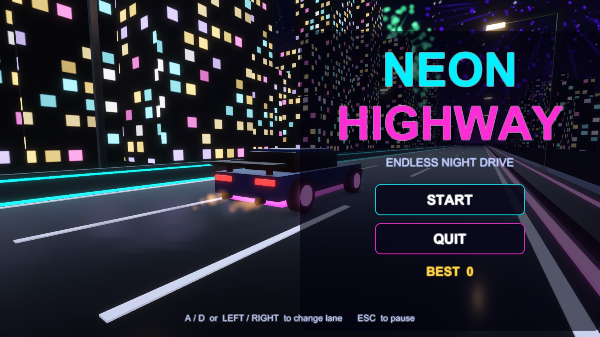
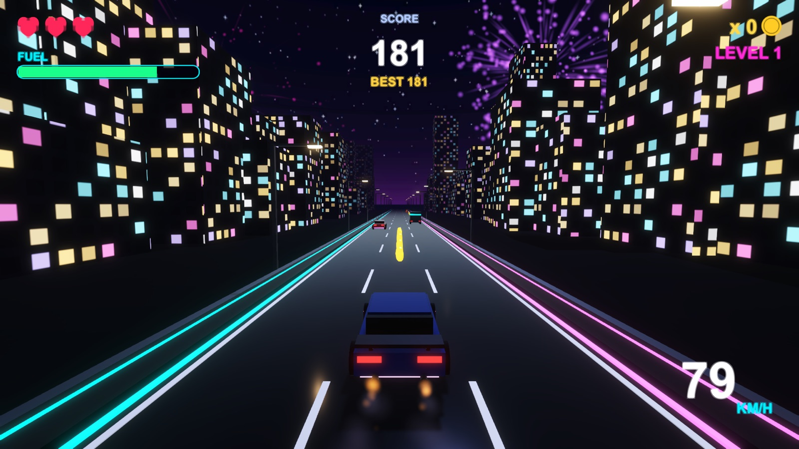
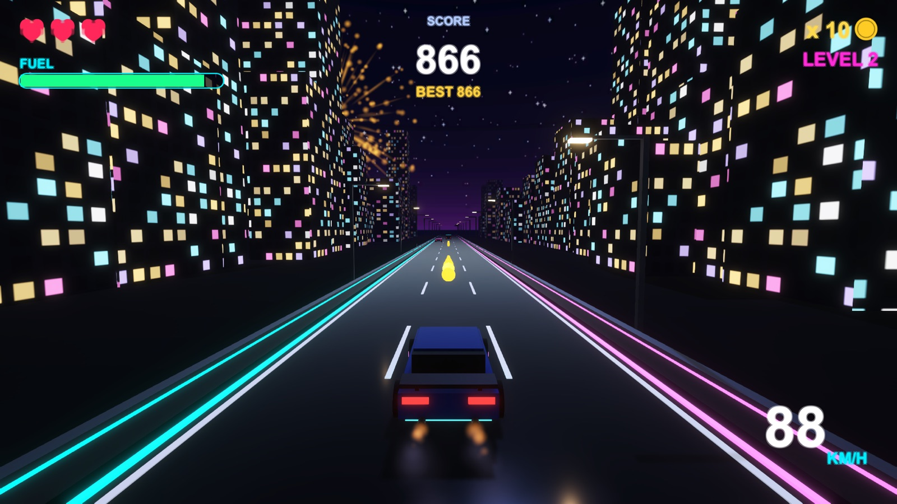
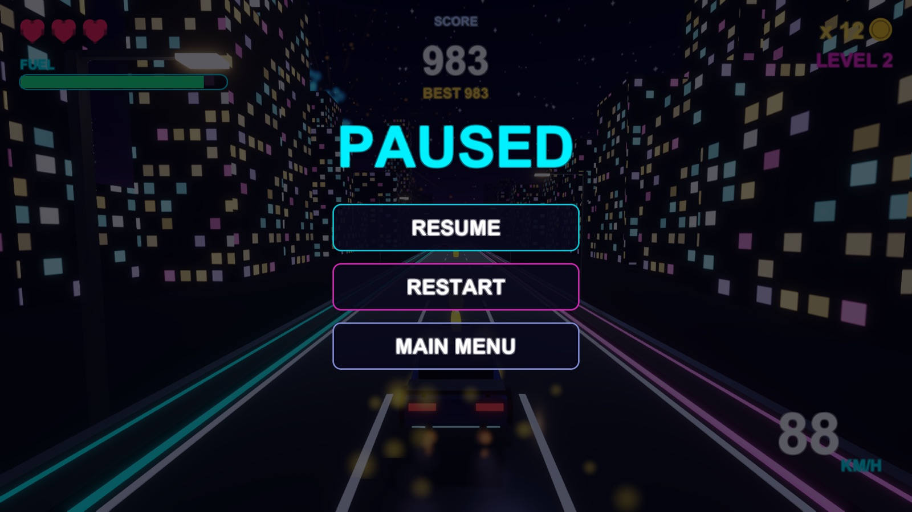
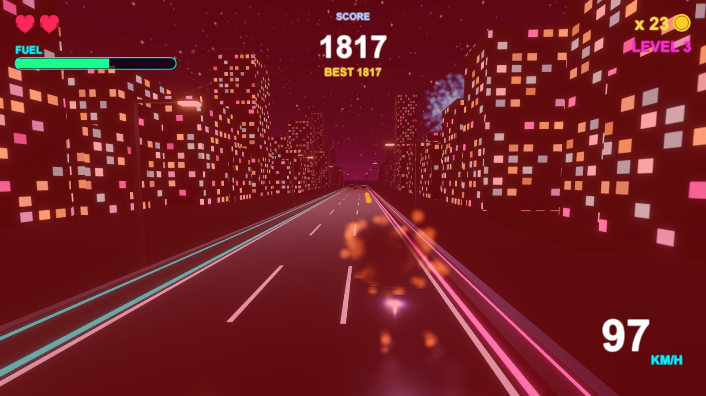
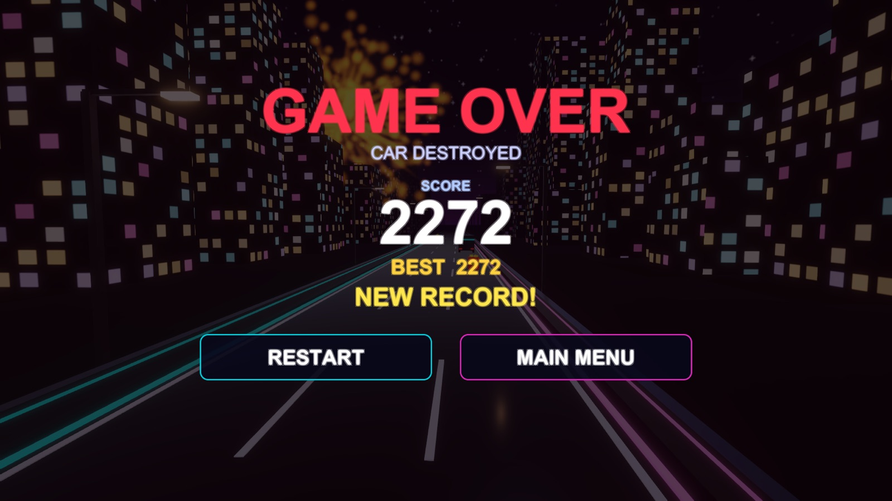

برای دیباگینگ، یادگیری مطالب لازم برای انجام تمرین، ویرایش متون و تمیزی کد از کمک هوش مصنوعی استفاده کردم. همه تکسچرها و صداها با کد تولید شدهاند و از منبع بیرونی استفاده نشده است.
Road. RoadGenerator keeps segments (RoadSegment, 24 m) up to 260 m in front of the car. The road moves back under the car, and a segment that has passed behind the camera goes back to the pool and is placed again at the far end. Each time a segment is reused its buildings get a new size and position. The road has 3 lanes. A/D or the arrow keys move the car between them.
Input. Only the new Input System is used. CarControls.inputactions has a Gameplay map (MoveLeft, MoveRight, Pause, Confirm) and a UI map (Point, Click, Navigate, Submit...) which is wired to the InputSystemUIInputModule for the menu buttons.
Classes. Interactable is abstract and has the abstract OnPlayerContact and virtual Update, Init, ApproachSpeed. Obstacle and Collectible extend it. Obstacles: StaticCar (stopped van or truck with blinking hazard lights) and MovingCar (drives the same way, slower, overrides ApproachSpeed). Collectibles: Coin and FuelCan (override Collect). GameManager is a singleton and holds the states Menu, Playing, Paused and GameOver.
Lives. The car has 3 lives shown as hearts. A hit removes one life, the car flashes red and blinks for 1.8 s (no second hit in that time), the camera shakes, there are sparks and smoke, a red flash on the screen and a crash sound. At 0 lives the car explodes and the game is over.
Fuel. Fuel goes down with time (a bit faster at high speed) and is shown as a bar that turns red and blinks "LOW FUEL" under 25%. Each fuel can gives +35. The spawner puts one can about every 280 m. Empty tank means game over.
Difficulty. Every 300 m the level goes up. Each level makes the world faster (22 m/s, +2.5 per level, max 56) and the rows of obstacles closer, and makes double rows and moving cars more likely. A row never blocks all 3 lanes, and moving cars stay in one lane at a time, so there is always a way through.
Object pooling. PoolManager keeps one stack of inactive objects per prefab. Road segments, cars, coins, fuel cans, fireworks and all particle effects are taken from it and returned to it. Instantiate and Destroy are not used while playing (pools are pre-filled at start).
Night look. Night skybox with stars and a purple glow at the horizon, dark blue fog, a weak moon light, street lights (point lights) every 12 m, and city buildings with lit windows. The car has two headlight spot lights and a neon underglow (an emissive strip and a point light) whose intensity grows with the speed and pulses. The URP renderer uses Forward+ so there can be many lights. The post processing volume has Bloom, ACES tonemapping, color adjustments, vignette and a bit of chromatic aberration.
Fireworks and particles. FireworksManager shoots a random coloured burst (sparks with trails and glitter) in the sky every 0.6 to 2.2 s. Particle systems are also used for the exhaust smoke and flame, collision sparks, the explosion and the pick-up sparkle. Bloom makes them glow.
Sound. Looping music, an engine loop whose pitch follows the speed, and sounds for crash, coin, fuel, low fuel, fireworks, level up, game over and buttons.
UI. Main menu (start, quit), pause menu (resume, restart, main menu), game over screen (score, best score, restart, main menu), and a HUD with speed, fuel bar, lives, score, best score, coins and level.
Saving. The best score is stored with PlayerPrefs when the game ends and when the application quits.
Testing. A small helper (AutoDriver, only active with an environment variable) drove the built game: an AI played 110 s to level 12 with no errors at about 800 fps, and fake keyboard and mouse events through the Input System confirmed that the keys and every menu button work.





